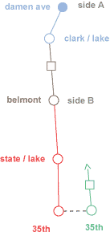

 |
 |
Phenomenon : Arrival of 20MB iPod prompts radical recentering of way I rock out, possibly way society in general rocks out. Is album dead?
Why? : Shuffle function's tendency to juxtapose tracks like New/Kids Block “H. Tough” with Circle Jerks “I Just Want Some Skank” possibly heralds long-promised arrival of true postmodern era, reconciliation of New Kids/C. Jerks' fanbases.
Unforeseen Side Effects : Fruitless search for some sort of mp3 player receptacle installed by foresighted Japanese assembly line worker in personal '97 Nissan Altima forces me back on public transportation to enjoy entire music collection stored in new gadget. Must confront the unwashed once again. How has humanity changed since last sighting in 1997?
Hypotheses :
1. Album form, attention spans join tails and opposable big toes in big green dumpster of evolution.
2. New way to rock out will greatly improve world's ability to be rad.
3. Human contact on CTA either reawaken long-dormant humanism or send me bicycling to cabin in Montana .
Equipment : iPod (1), med. crml mchta (3), disguise (1), pens (4), notepad (1).
1335 CST Sbound Blue Line (˜Damen stop)
1 of 3610 “ Holiday in the Sun” by The Sex Pistols
- Jesus, don't any of these people have cars? Half of passengers appear to be looking at other half, then furtively writing things about them on crumpled-up scrap paper. 1st but not last time thankful for disguise: Not only does it allow unobtrusive anthropological data-gathering crucial to proving my hypotheses, it ensures I won't appear as extra in someone's bad self-published novel.
- Did Pistols' promise to go “over the Berlin Wall” set collapse of CCCP in motion? iPod announces uncontrollable power of Rock to alter world right @ outset. Ballsy machine.
3 of 3610 “Eo” by Café Tacuba
- Extreme cognitive dissonance as brain – bathed in jumpy bounce-pop of “the Mexican Radiohead” sprayed through earholes by Sony MDR-V150 muffs – expects to see fellow passengers dancing in aisle, instead sees 35 souls struggling to keep repugnance of each other hidden under calm public space exteriors.
- More accurate to call Café Tacuba “the Mexican C & C Music Factory.” This is not necessarily an insult.
4 of 3610 “Xplosive” by Dr. Dre featuring Nate Dogg
- Through the medium of the iPod, silky baritone Nate Dogg speaks to several points:
- He reiterates that it's common knowledge amongst true gangstas that, if the truth be known about his heart of hearts, he's never at any point in his life harbored sincere affection for a ho.
- Within the sub-culture of True Smokers, Nate Dogg enjoys the sterling reputation of a man whose trees contain a mixture of 100% chronic leaves/ 0% seeds.
- Nate Dogg reconsiders his stance on the attractiveness of the lady he spent the previous evening attending to in light of his lowered blood-alcohol level.
- Nate Dogg is big enough to offer said lady a hit off his bong while breaking to her the reality that he and his friends are going to continue enjoying great success in the recording industry, while she has a lifetime of “jocking gangsta dicks” to look forward to.
| keep going |